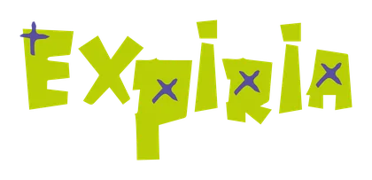
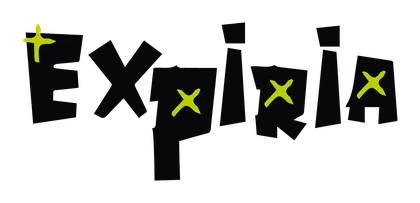
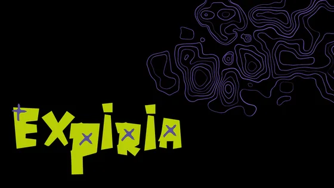
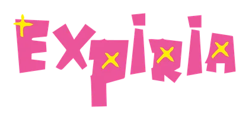
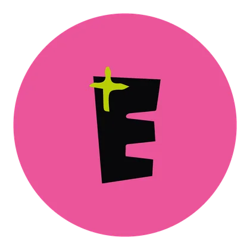
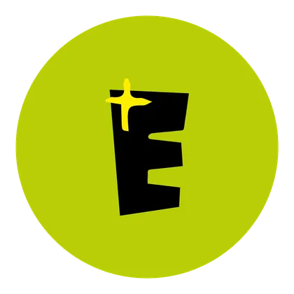

#F563A2
#FDEA06
TítulosPagkaki
SubtítulosSifonn
Arrastra los stickers
Identidad visual · 2025
Expiria
Identidad visual para una empresa de UX/UI que diseña páginas web. Un logotipo tipográfico, el isotipo «E», una paleta con energía digital y un sistema tipográfico pensados para transmitir resultados claros y medibles.
- Contexto
- Materia de Marketing
- Herramientas
- Illustrator
- Mi rol
- Diseño de toda la identidad